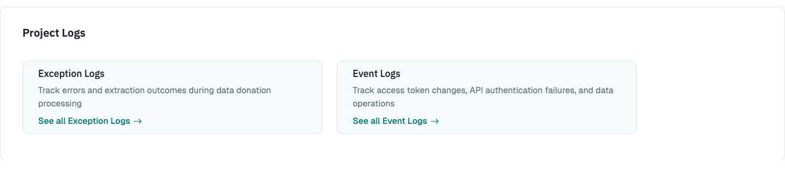

Project Logs¶
The project logs help you spot problems while your study is running, for example participants whose files DDM can't read, or a Blueprint that doesn't match the platform's current export. Check them after you launch your project and regularly while it runs.
To open them, go to the Project Hub and click Project Logs.

There are two logs:
- The Exception Log lists problems that occurred during participation.
- The Event Log lists actions on the project, such as data downloads and deletions.
Exception Log¶
Each entry shows:
- When the problem occurred.
- The type of problem (see below).
- The participant and Blueprint concerned, if any.
- Whether it occurred in the participant's browser (client side) or on the server (server side).
- A message with details.
Problems in the Participant's Browser¶
These problems occur while DDM processes the uploaded file in the participant's browser.
Problems with the participant's file. Usually, the participant uploaded the wrong file. If many participants are affected, the platform may have changed its export, or your instructions may be unclear.
| Code | Meaning |
|---|---|
INVALID_ZIP |
The Uploader expects a ZIP file, but the participant uploaded a different file type. |
ZIP_READ_FAIL |
The ZIP file couldn't be read. The message contains the error and, for a nested ZIP file, its path and depth. |
NO_FILE_MATCH |
The ZIP file doesn't contain a file that matches the Blueprint's File paths. |
STRING_CONVERSION_ERROR |
The file's content couldn't be read as text. |
PARSING_ERROR |
The file couldn't be read in the expected format (JSON, CSV, or TXT). |
EXTRACTION_ROOT_NOT_FOUND |
The file doesn't contain the Blueprint's Extraction Root. |
NESTED_PATH_NOT_FOUND |
The file doesn't contain the Blueprint's Nested loop path. |
Problems with your configuration. Fix these in the Blueprint.
| Code | Meaning |
|---|---|
INVALID_REGEX |
A regular expression in File paths isn't valid. |
INVALID_FIELD_REGEX |
A regular expression in a field name isn't valid. |
NO_FIELDS_TO_EXTRACT |
No field has Keep in donation enabled. In older logs, this is called NO_EXTRACTION_RULES. |
MORE_THAN_ONE_KEY_MATCH |
More than one field in the file matches a field's Expected name. Make the name or regular expression more specific. |
Unexpected problems. If these occur, please check carefully and consider reporting an issue.
| Code | Meaning |
|---|---|
FILE_PROCESSING_FAIL_GENERAL |
An unexpected error occurred while processing the file. |
UNSUPPORTED_BP_FORMAT |
The Blueprint's file format isn't supported. |
Extraction Summaries¶
These entries aren't problems. DDM writes them once per Blueprint every time it processes a file successfully. Use them to check whether your Blueprint extracts what you expect.
| Code | Contains |
|---|---|
EXTRACTION_STATS |
Counts of the extraction: rows in total (nRowsTotal), rows with a missing field (nRowsMissingField), rows removed by Extraction Rules (nRowsFilteredOut), and which fields weren't found how often (noKeyMatches). With a Nested loop path, also the number of sub-entries (nNestedRowsTotal) and of sub-entries skipped because of Nested expected fields (nNestedRowsMissingField). |
EXTRACTION_LOG |
How often each Extraction Rule was applied, by rule ID. |
EXTRACTED_FIELDS_MAP |
Which field in the file was matched to which Expected name. Useful if you use regular expressions. |
For example, if nRowsFilteredOut is close to nRowsTotal for most participants, your
Extraction Rules may remove more than intended.
Problems on the Server¶
Server-side problems don't have codes. Their message starts with where they occurred:
- Data Donation Processing Exception: The server couldn't process a donation, for example because the uploaded data was incomplete or invalid.
- Questionnaire Post Exception: The server couldn't save questionnaire responses, for example because a response didn't match the question's options.
Problems in the questionnaire are logged only on the server.
Event Log¶
The Event Log records:
- Deleted API tokens.
- API requests that failed authentication or were denied.
- Data downloads, whether successful, failed, or denied.
- Data deletions, whether successful, failed, or denied.
- Deletions of individual participants, whether successful, failed, or denied.
- Problems in the participant's browser that couldn't be assigned to a participant, for example because their session had expired.